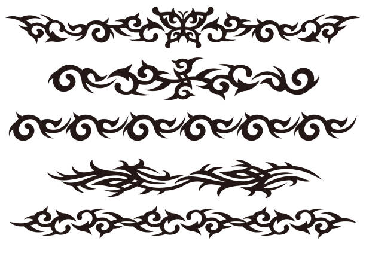
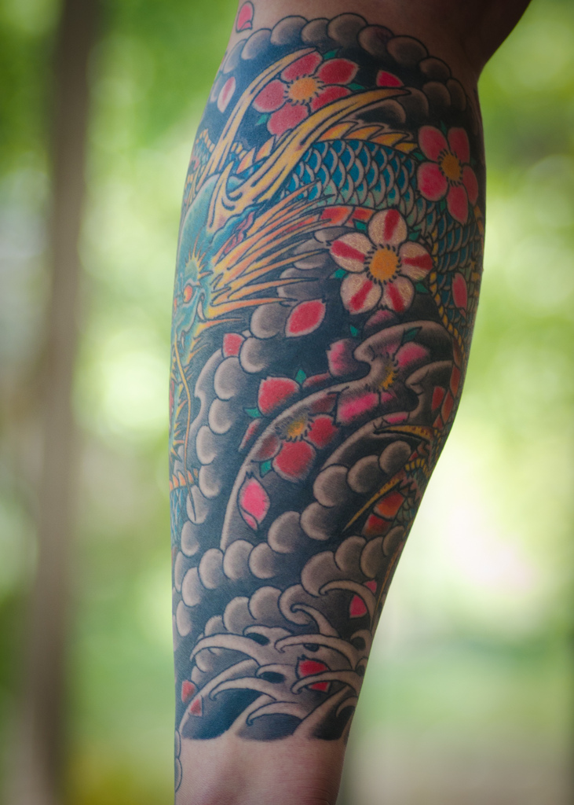
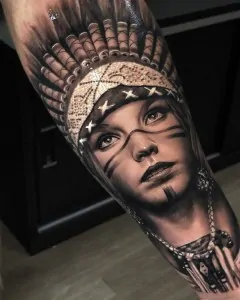
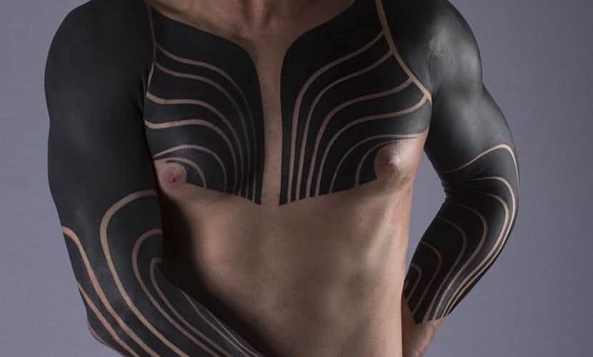

El estilo de la vieja escuela nunca muere y, por supuesto, también llegó al mundo del tatuaje. En su caso, el estilo Old School fue el principal o más recurrente cuando la tinta en la piel llegó como parte de la moda o el estilo personal a occidente hace ya décadas. Lo reconocerás en seguida por sus trazos gruesos y sus colores vivos y sólidos, los motivos marineros o de chicas Pin Up.

Relacionamos los tatuajes tribales fácilmente con uno de los estilos más tatuados en los 80, los 90 e incluso a principios de los 2000, con diseños bastante básicos o sencillos y no siempre con un significado claro o referente a las tribus. Su origen es muy antiguo y procede de varias culturas como, por ejemplo, la celta, la maorí y la polinesia, ya que se trata de tatuajes originados en las tribus de varias zonas del mundo y de distintas épocas.
Uno de los estilos más antiguos y que, a la vez, más crecen como moda hoy en día en todo el mundo es el tatuaje de estilo japonés. Además de ser un estilo clásico con una de las trayectorias más ricas en la historia del tatuaje, y de tener un profundo significado cultural, son de una estética muy característica. Los diseños del Irezumi o japonés tradicional suelen contener grandes relatos que cubren, a veces, el cuerpo por completo. Así, algunas personas se hacen una o varias piezas sueltas, pero es muy común que quienes optan por este estilo las unan usando dibujos que unifican y que son elementos como el aire o el agua, teniendo así, por ejemplo, la espalda, los brazos y el pecho completos. Más allá, es muy popular también hacerse un body suit japonés o el cuerpo entero, siendo este formato uno de los principales en la cultura japonesa.
El realismo en los tatuajes es uno de los estilos más atrevidos que existen, pues a menudo suponen retratos de rostros o lugares muy concretos, representados con un detalle casi fotográfico. Lógicamente, es también un estilo muy complicado de realizar, pues requiere un dominio impecable tanto del dibujo como de la aguja. Por ello, este es uno de los estilos en los que resulta más importante que nunca que sea realizado por un tatuador profesional especializado en este estilo, siempre que se busque de verdad un buen resultado a nivel artístico.
Entre los estilos de tatuajes actuales, que empezaron a usarse hace relativamente pocos años,
encontramos el tatuaje con puntillismo o dotwork. Sí, es la misma técnica pictórica de crear
desde formas geométricas planas hasta representaciones realistas siempre a través del dibujo de
muchos puntos.
Ni una sola línea y un efecto precioso y sorprendente. Por tanto, podemos decir
que es más bien una técnica
aplicable a prácticamente todos, pero claramente no a todos
estilos de tattoos. Puede usarse en todo el diseño
del tatuaje o solo en una parte de la pieza
que se va a tatuar.

El tatuaje neo tradicional es muy fácil de confundir con el estilo Old School, ya que es este mismo,
adaptándose a los tiempos actuales. Los trazos son más modernos y varían, a veces, efectos
difuminados o sombras suaves que dan un poco de profundidad al dibujo, los colores son más
variados que en el Old School e, igualmente, los temas resultan más amplios e incluso híbridos.
No obstante, el estilo de la vieja escuela sigue ahí y puede verse a leguas. Normalmente, son piezas
que dejan ver claramente la base Old School y añaden la mezcla con algún otro estilo, como el
realismo sencillo, añaden líneas finas (en el viejo estilo solo se usaban las gruesas), entre
otros rasgos que los diferencian.
Como indica su nombre, se caracterizan por estar realizados por completo en tinta negra. El estilo blackwork se define sencillamente por tratarse de diseños, que pueden ser figuras más o menos grandes, que solo usan tinta negra, con más o menos cantidad de sombreado. Además, cuando este estilo va más allá, nos encontramos con el blackout se basa en rellenos completos en negra, dejando que la forma del dibujo o de la forma creada acabe siendo la zona de la piel que ha quedado sin tatuar. A menudo los dibujos son de estilo neotribal o geométricas, simplemente consistentes en cubrir una parte del cuerpo. Es por esto que, en ocasiones, este estilo se utiliza como técnica de relleno para unir tatuajes.
